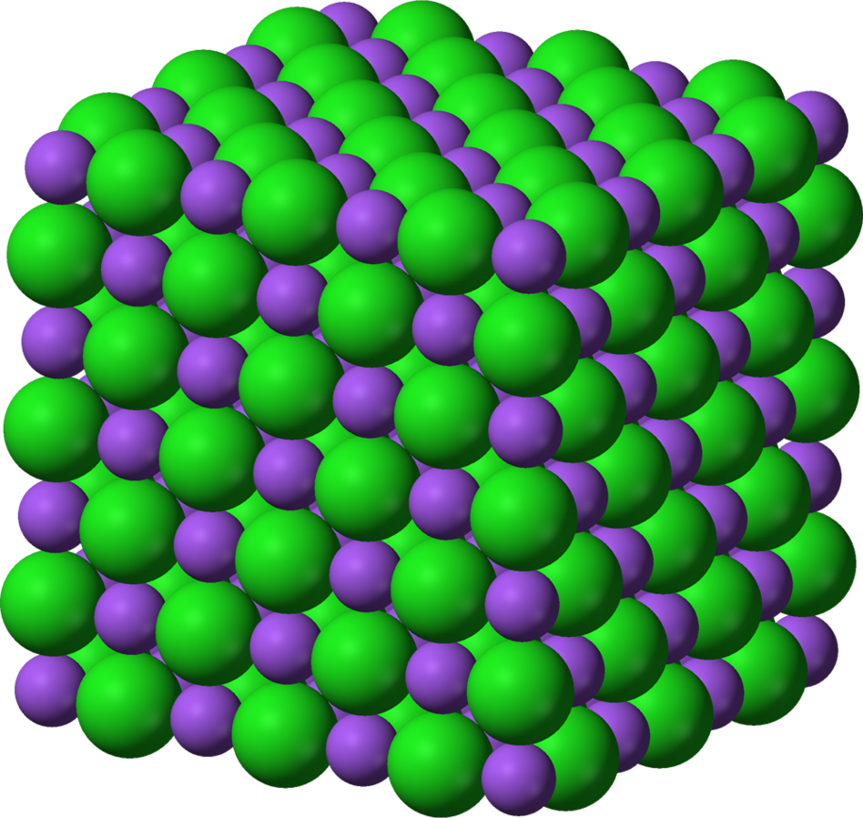
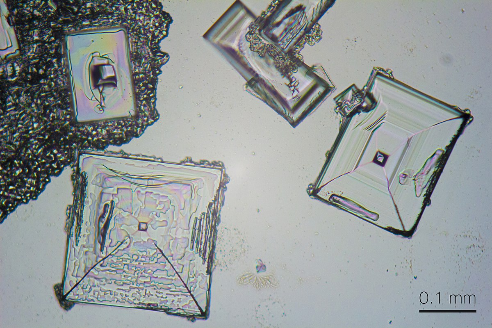

Čo je soľ?
Soľ je kryštalická látka patriaca ku soliam. V chémii sú soli iónové zlúčeniny katiónov a aniónov. Soľ sa skladá zo sodných katiónov (Na+) a chloridových aniónov (Cl-), ktoré sa v jej štruktúre pravidelne striedajú.

Fialová: sodný katión (Na+), zelená: chloridový anión(Cl-). Zdroj: [3]
V prírode sa vyskytuje ako minerál halit (kamenná soľ).
Medzi základné vlastnosti soli (chloridu sodného) patria:
- vysoké teploty varu a topenia v dôsledku silných vnútromolekulových príťažlivých síl;
- nevodivosť v tuhom skupenstve, vodivosť vo forme roztoku a taveniny;
- rozpustnosť vo vode.

Chlorid sodný pod mikroskopom. Zdroj: [4]